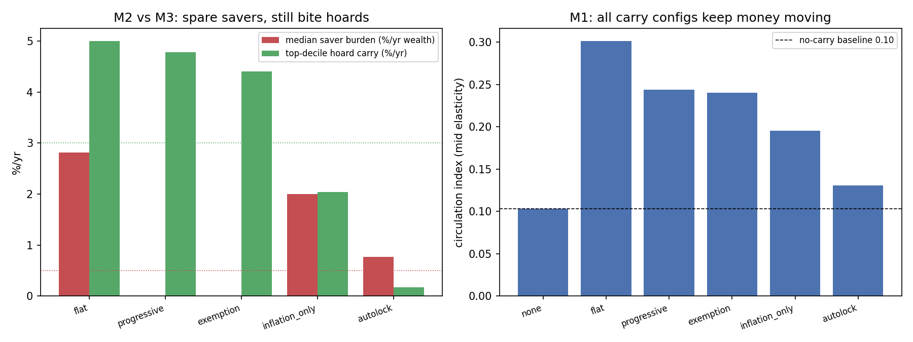

In plain language
July 10, 2026 (dateline corrected July 11; originally mis-dated July 9). Companion to RESULTS - v24.0 Carry-Cost Design.
The question we tested
EDEN discourages hoarding by making idle cash slowly lose a little value each year (demurrage). The worry: does that quietly punish ordinary people who just want to save what they earned? We built a population of savers — from people with a few months' cushion to a few large hoarders — and compared the current rule against gentler versions, checking three things at once: does money keep circulating, does it spare ordinary savers, and does it still discourage giant idle hoards?
What we found
The worry is real. Under the current flat rule (5%/year on all idle cash), a typical person with about four months of savings pays roughly $67 a year — about 2.8% of their savings — and two out of three people pay a meaningful amount. That's not ruinous (it's close to what inflation already quietly does to cash in a bank account today), but it does land on regular savers, not just hoarders. Your instinct was right.
And it's easily fixable. If we simply exempt the first several months of savings and only apply the cost above that — or ramp it up gradually so only very large idle piles pay the full rate — then: - a typical saver pays exactly $0, - the giant idle hoards still pay ~4.5%/year (the anti-hoarding purpose is kept), and - money still circulates just as intended.
So EDEN can keep the benefit (money stays in motion, dynasties don't pile up) without the sting on ordinary earned savings. That's the recommendation: switch from a flat rate to a progressive one with a generous personal exemption.
Two tempting alternatives that turned out worse: - "Just use invisible inflation instead" — it's invisible, but it hits everyone (including the poorest, on every dollar) and barely discourages hoarding. It's actually the least fair option. Keep a little of it as background, but it can't be the main tool. - "Auto-lock everyone's money so nothing is exposed" — so gentle it stops working entirely: money stops circulating and hoards stop being discouraged. Locking should stay a voluntary savings choice, not forced on everyone.
The bottom line
The design should keep a carry cost on idle hoards but exempt ordinary savings — a progressive rate with a generous personal allowance gives you everything the flat rule was for, and nobody with a normal amount of savings ever feels it. What you earn and save in reasonable amounts is protected; only large piles of idle, liquid cash gently depreciate — and even that money is funding everyone's essentials floor while it does.
One honest caveat
How strongly people actually change their behavior in response to a small carry cost is something no simulation can settle — only a real pilot can. But the "who pays what" part — that the flat rule hits ordinary savers and a progressive one spares them — is just arithmetic, and that part is solid.
Figures

Technical results
Run: July 10, 2026 (corrected July 11 — this header previously said July 9; every file in this folder is mtime July 10, 10:37). Spec: v24 SPEC - Carry-Cost Design (registered).md — bars M1–M4 fixed before code (provenance caveat, added July 11, Verification v4 D5: v24 is the one sim in the batch whose spec-before-code ordering cannot be confirmed from the filesystem — the SPEC's mtime (10:37:47) postdates the results (10:37:38), all six files landing within 21 seconds, consistent with a copy-in from elsewhere; flagged rather than asserted). Engine: carry_cost_design_sim.py (deterministic; heterogeneous population, seeds 7+11); committed: results_v24.json, fig_v24_carry_cost.png. Owner-motivated: does the flat 5%/yr demurrage punish ordinary savers, and can a gentler rule keep the benefits? Every number traces to results_v24.json.
Verdict in one line: the worry is validated and fixable — the current flat 5%/yr demurrage genuinely does hit ordinary savers (a median household with ~4 months of savings pays ~$67/yr, 2.8% of its wealth, and 67% of people pay a meaningful amount), but a progressive-by-size or generous-exemption variant drops the median saver's burden to exactly zero while still deterring large hoards (~4.5%/yr on the top decile) and keeping money circulating — so EDEN can have the anti-hoarding benefit without the adoption sting.
The comparison (mid elasticity, seed-averaged)
| Config | circulation index | median saver burden | median $ /yr | % paying >0.5%/yr | top-decile hoard carry |
|---|---|---|---|---|---|
| A0 none (baseline) | 0.103 | 0.00% | $0 | 0% | 0.0% |
| A1 flat 5% (current canon) | 0.301 | 2.81% | $67 | 67.5% | 5.0% |
| A2 progressive-by-size | 0.244 | 0.00% | $0 | 27.7% | 4.8% |
| A3 generous exemption (12 mo) | 0.241 | 0.00% | $0 | 22.7% | 4.4% |
| A4 inflation-only (~2%) | 0.196 | 2.00% | $48 | 100% | 2.0% |
| A5 auto-lock everything | 0.131 | 0.77% | $67 | 57.1% | 0.2% |
Bars: M1 (circulation beats no-carry) — four of five carry configs pass; A5 auto-lock FAILS (mid circulation 0.131 vs the required no-carry+0.03 = 0.133; bar_summary.M1_circulation.A5_autolock: false). (Corrected July 11, Verification v4 D5: this line previously said "all five carry configs pass," contradicting the committed JSON — a failed bar reported as passing. A5's M1 failure reinforces F4: auto-locking is too gentle to move circulation.) M2 (ordinary earners spared, median ≤0.5% of wealth) — only A2 and A3 pass; A1 flat FAILS (and A5 fails at 0.77%). M3 (hoard deterrence ≥3% on top decile) — A1, A2, A3 pass; A4, A5 fail. M4 (a config satisfying all three exists) — PASS: A2 and A3 both dominate.
Findings
F1 — The adoption worry is real, and now quantified (A1 FAILS M2). Under the current flat rule, the median household — someone holding about four months of essentials as savings — pays ~$67/year, which is 2.8% of their wealth, and two-thirds of the population pays more than 0.5%/yr. That is not catastrophic (it's roughly what inflation already does to cash), but it is a real, felt cost on ordinary earned savings, and it lands on far more than just hoarders. The instinct that "this could punish normal savers" was correct.
F2 — Progressive or generous-exemption fixes it completely, at almost no cost to the mechanism's purpose (A2/A3 pass all three — the recommendation). Make the carry cost zero on the first ~6–12 months of essentials worth of savings and only bite above that (A2 ramps 0%→2%→5%→8% by hoard size; A3 exempts the first 12 months flat then 5%): the median saver pays exactly $0, the fraction paying anything meaningful drops from 67% to ~23–28%, and yet the top idle decile still pays ~4.5%/yr (hoard deterrence preserved) and money still circulates (index 0.24 vs the flat rule's 0.30 vs the no-carry 0.10). The only cost is a slightly lower circulation index than flat — a small price for eliminating the ordinary-saver burden entirely. This is the actionable recommendation: switch the demurrage rule from flat to progressive-by-size (or a generous personal exemption).
F3 — "Just use invisible inflation instead" is the least fair option (A4). The intuition that a ~2% ambient inflation would be gentler because it's psychologically invisible is half-right: it's invisible, but it's regressive and untargeted — 100% of people pay it (including the poorest, on every balance), and it only deters hoards at 2%/yr (below the M3 bar). So inflation-only spares no one and barely does the job; it's worse on both fairness and purpose than a progressive demurrage. Keep the mild ~2% inflation as a background circulation nudge, but it can't be the primary anti-hoarding tool.
F4 — Auto-locking everything is too gentle to work (A5). Exposing only a small transactional slice (sweeping the rest into locks) sounds ideal, but it collapses both the circulation incentive (index 0.13, barely above no-carry) and hoard deterrence (0.2%/yr) — because if almost nothing is exposed, almost nothing is nudged. Term-locks are a good voluntary savings vehicle (a saver can opt in to offset demurrage), but making them the automatic default defeats the mechanism. Locks should be opt-in, not the universal wrapper.
What to change (proposed, for ratification)
Replace the flat 5%/yr demurrage in EVE — Velocity Defense v1.3 §8 with a progressive-by-size schedule (A2): 0% on idle balances up to ~6 months of essentials, rising marginally to a small cap only on very large idle hoards — or, if simpler is preferred, a flat 5% above a generous ~12-month-essentials personal exemption (A3). Both keep the mild ~2%/yr inflation as a secondary nudge and keep term-locks as the voluntary savings vehicle. This preserves everything demurrage was for (circulation + hoard deterrence) and removes the adoption sting on ordinary earned savings. A gate/spec-amendment candidate.
Honest limits
The circulation axis rests on a behavioral elasticity the vault is explicit no simulation can settle — how strongly people actually shrink idle holdings in response to a carry cost (swept low/mid/high here; mid reported). If the true elasticity is low, all configs circulate less and the case for any demurrage weakens (lean harder on the market-maker/reserve instead). The burden axis is robust — it's arithmetic on who holds what, largely elasticity-free — so F1/F2's core claim (flat hits ordinary savers; progressive/exemption spare them) does not depend on the behavioral guess. The wealth distribution (lognormal, median ~4 months essentials) is a stated assumption; the direction of the result is insensitive to it, the exact percentages are not. This is a design-comparison sim, not a forecast; the true elasticity and the right exemption threshold are pilot calibrations.
Run and written July 10, 2026 (dateline corrected; originally mis-signed July 9), verification session (self-labeled Fable; per the owner's record this sitting ran as Opus 4.8 — see INDEX provenance note). A1 (current canon) reported as FAILing the ordinary-earner bar — a finding that motivates a proposed softening, not a defect hidden. Bars unmoved.
Postscript, July 11, 2026 (Verification v4 action 6, executed by the Fable 5 verification session): the M1 bar line corrected — the committed JSON records A5_autolock: false under M1, and this document had reported "all five pass" (a failed bar shown as passing); the July-9 datelines corrected to July 10; and the SPEC-mtime provenance caveat added to the header (the one sim in the batch where spec-before-code is not filesystem-verifiable). No JSON value changed — this was a prose-vs-artifact reconciliation; the engine's numbers were already verified byte-reproducible.
Raw data